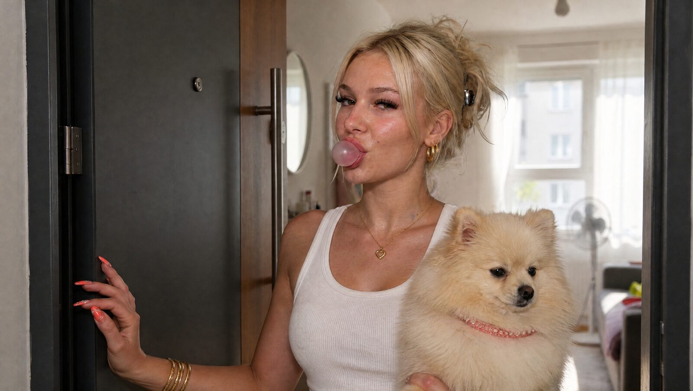
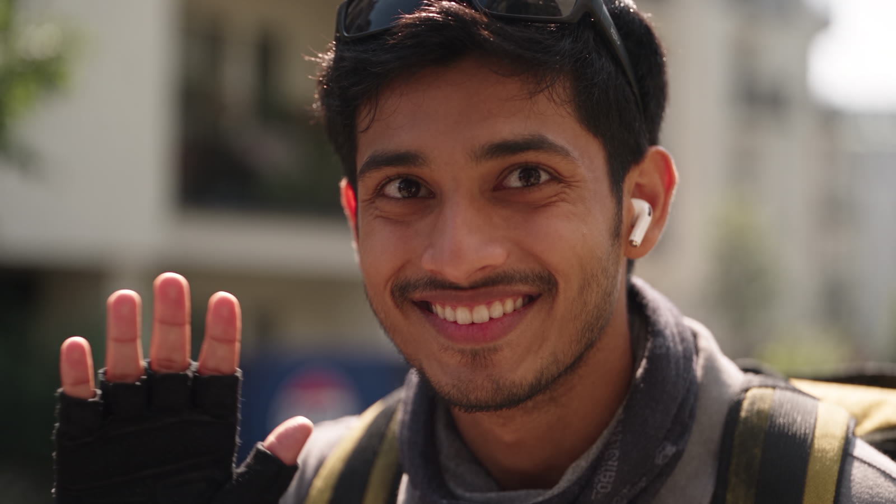
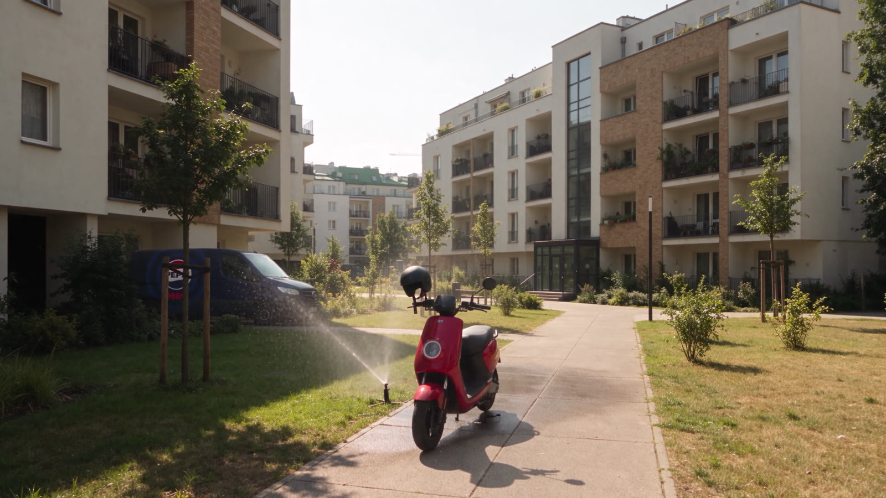
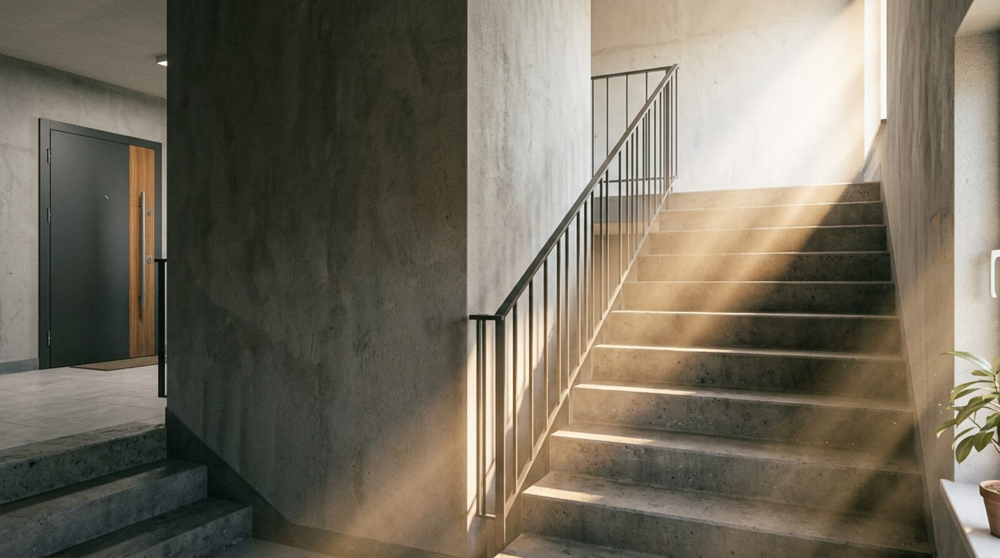

← Series← Серія← Serial · EPISODE 03 · PIZZA AT THE DOOR · 45 sЕПІЗОД 03 · ПІЦА ПІД ДВЕРИМА · 45 сODCINEK 03 · PIZZA POD DRZWIAMI · 45 s
Delivery
A hot summer noon. A courier brings a pizza to the top floor — without a drop of Pepsi. Pepsi Patrol is already listening on the radio.
Спекотний літній полудень. Кур'єр несе піцу на останній поверх — і жодної краплі Pepsi. Pepsi Patrol уже слухає в рації.
Upalne letnie południe. Kurier niesie pizzę na ostatnie piętro — bez kropli Pepsi. Pepsi Patrol już nasłuchuje przez radio.
OverviewКороткоW skrócie
TaskЗадачаZadanie
Turn the brief's delivery story into a 45-second chase that stays documentary — and give the series its summer.
Перетворити історію доставки з брифу на 45-секундну погоню, яка лишається документальною, — і дати серії її літо.
Zamienić historię dostawy z briefu w 45-sekundowy pościg, który pozostaje dokumentem — i dać serialowi jego lato.
IdeaРішенняPomysł
A surveillance operation over a pizza. The patrol tracks the courier by radio like a drug deal, chases him up the stairs — and ends up treating everyone, even the courier.
Операція стеження через піцу. Патруль веде кур'єра по рації, як наркокур'єра, женеться за ним сходами — і зрештою пригощає всіх, навіть кур'єра.
Operacja obserwacyjna z powodu pizzy. Patrol prowadzi kuriera przez radio jak przemytnika, goni go po schodach — i w końcu częstuje wszystkich, nawet kuriera.
ResultРезультатWynik
A finished 45-second film in Polish, TV and web masters from 4K ProRes to H.264.
Готовий 45-секундний фільм польською, мастери для ТБ і вебу від 4K ProRes до H.264.
Gotowy 45-sekundowy film po polsku, mastery TV i web od 4K ProRes po H.264.
The briefБрифBrief
Delivery is one of the four stories in the client's brief, with the patrol's radio lines already written: “He's in.” “He's got the bag.” “Getting closer.” “Now. We're going in!”
Доставка — одна з чотирьох історій брифу клієнта, з уже написаними репліками патруля в рації: «Зайшов». «У нього сумка». «Усе ближче». «Зараз. Заходимо!»
Dostawa to jedna z czterech historii z briefu klienta, z gotowymi kwestiami patrolu przez radio: „Wszedł.” „Ma torbę.” „Jest coraz bliżej.” „Teraz. Wchodzimy!”
Make a pizza delivery feel like a police operation.
Зробити доставку піци схожою на поліцейську операцію.
Sprawić, by dostawa pizzy wyglądała jak akcja policji.
After a night car park and a winter market, the series needed contrast: summer, heat, a bright noon with short shadows and dust glowing in the sun — the season when people drink the most.
Після нічної парковки й зимового ярмарку серії був потрібен контраст: літо, спека, яскравий полудень із короткими тінями й пилом, що світиться в променях, — сезон, коли п'ють найбільше.
Po nocnym parkingu i zimowym jarmarku serial potrzebował kontrastu: lato, upał, jasne południe z krótkimi cieniami i kurzem świecącym w słońcu — sezon, w którym pije się najwięcej.
Director's solutionРежисерське рішенняRozwiązanie reżyserskie
A courier climbs to the top floor with a pizza for pani Sandra and her spitz Brokat. The patrol follows every step by radio — and storms the stairwell.
Кур'єр підіймається на останній поверх із піцою для пані Сандри та її шпіца Брокату. Патруль стежить за кожним кроком по рації — і штурмує під'їзд.
Kurier wspina się na ostatnie piętro z pizzą dla pani Sandry i jej szpica Brokata. Patrol śledzi każdy krok przez radio — i szturmuje klatkę schodową.
A black-and-white fisheye CCTV over the courtyard opens and closes the film. Inside, the invisible amateur runs the stairs with the patrol — plus one new point of view: Darek's body camera, built on “expectation vs. reality”.
Чорно-біла камера спостереження з фішаєм над двором відкриває й закриває фільм. Усередині невидимий аматор біжить сходами разом із патрулем — плюс нова точка зору: нагрудна камера Дарека, побудована на «очікування — реальність».
Czarno-biała kamera monitoringu z rybim okiem nad podwórzem otwiera i zamyka film. W środku niewidzialny amator biegnie po schodach z patrolem — plus nowy punkt widzenia: kamera nasobna Darka, zbudowana na „oczekiwania vs rzeczywistość”.
A lazy noon on CCTV → the courier runs up → Sandra opens: gum on the door frame, pizza, Brokat → “Turbo!” — Darek sprints past the courier → Aga calmly takes the lift → Darek's body cam: expectation vs. reality → Aga steps out past him and knocks → the charge, over a slice of pizza → the can → Sandra's slow journey from indifference to “Wow” → the curious courier is caught peeking — and gets a can too → CCTV finale; the track plays to the very last beat.
Лінивий полудень на камері спостереження → кур'єр біжить нагору → Сандра відчиняє: жуйка на одвірку, піца, Брокат → «Turbo!» — Дарек мчить повз кур'єра → Ага спокійно їде ліфтом → нагрудна камера Дарека: очікування — реальність → Ага виходить повз нього й стукає → звинувачення над шматком піци → банка → повільний шлях Сандри від байдужості до «Вау» → цікавого кур'єра ловлять, коли він підглядає, — і йому теж дістається банка → фінал на камері спостереження; трек звучить до останнього біту.
Leniwe południe na monitoringu → kurier wbiega na górę → Sandra otwiera: guma na framudze, pizza, Brokat → „Turbo!” — Darek pędzi obok kuriera → Aga spokojnie jedzie windą → kamera nasobna Darka: oczekiwania vs rzeczywistość → Aga wychodzi obok niego i puka → zarzut nad kawałkiem pizzy → puszka → powolna droga Sandry od obojętności do „Wow” → ciekawski kurier przyłapany na podglądaniu — też dostaje puszkę → finał z monitoringu; utwór gra do ostatniego bitu.
Raj, 25, is curious, naive and unlucky — a red e-scooter, a mustard thermal bag. Pani Sandra is a flirtatious home manicurist: realistic and funny, never nasty. Darek is polite and kind even at full speed; Aga is serious, on duty, fast-talking without aggression.
Радж, 25, цікавий, наївний і невдаха — червоний електроскутер, гірчична термосумка. Пані Сандра — кокетлива домашня манікюрниця: реалістична й кумедна, але не неприємна. Дарек ввічливий і доброзичливий навіть на повній швидкості; Ага серйозна, при виконанні, тараторить без агресії.
Radż, 25 lat, ciekawski, naiwny i pechowy — czerwona e-hulajnoga, musztardowa torba termiczna. Pani Sandra to zalotna manikiurzystka domowa: realistyczna i zabawna, nigdy nieprzyjemna. Darek jest uprzejmy i życzliwy nawet w pełnym biegu; Aga poważna, na służbie, mówi szybko, ale bez agresji.
Casting & worldКастинг і світObsada i świat
The world was approved as moving cards before the film: Sandra, Raj, the courtyard and the stairwell. The geography came first — entrance at the bottom, Sandra's flat at the top, a steel lift on the landing, her door opening inwards.
Світ затвердили рухомими картками ще до фільму: Сандра, Радж, двір і під'їзд. Спершу — географія: вхід унизу, квартира Сандри нагорі, сталевий ліфт на майданчику, її двері відчиняються всередину.
Świat zatwierdzono jako ruchome karty przed filmem: Sandra, Radż, podwórze i klatka schodowa. Najpierw geografia: wejście na dole, mieszkanie Sandry na górze, stalowa winda na półpiętrze, jej drzwi otwierane do środka.
Photo testsФотопробиZdjęcia próbne postaci






Screen testsВідеопробиZdjęcia próbne
Every new character got a moving screen test before a single shot was generated. Switch to “In the film” to see and hear the same person in the film; the speaker turns sound on, a click enlarges.
Кожен новий персонаж отримав відеопробу ще до генерації першого плану. Перемкніть на «У фільмі», щоб побачити й почути ту саму людину у фільмі; динамік вмикає звук, клік — збільшує.
Każda nowa postać dostała zdjęcia próbne, zanim wygenerowano pierwsze ujęcie. Przełącz na „W filmie”, by zobaczyć i usłyszeć tę samą osobę w filmie; głośnik włącza dźwięk, kliknięcie powiększa.
Less “Instagram”, more life: asymmetry, a messy bun, the bun-twisting gesture as her signature move.
Менше «інстаграму», більше життя: асиметрія, недбалий пучок, жест «закручує пучок» як її фірмовий рух.
Mniej „Instagrama”, więcej życia: asymetria, niedbały kok, gest zakręcania koka jako jej znak rozpoznawczy.
Curiosity first: how he looks around, hesitates and smiles when he's caught.
Спершу цікавість: як він озирається, вагається й усміхається, коли його помічають.
Najpierw ciekawość: jak się rozgląda, waha i uśmiecha, gdy zostaje przyłapany.
Modern Polish housing in the spirit of Nowe Żerniki — and not one sign or recognisable building.
Сучасний польський житловий квартал у дусі Nowe Żerniki — і жодної вивіски чи впізнаваної будівлі.
Nowoczesne polskie osiedle w duchu Nowych Żernik — i ani jednego szyldu czy rozpoznawalnego budynku.
A lived-in landing: plants, sandals in a sunbeam, a steel lift — the stage for the whole chase.
Обжитий майданчик: рослини, сандалі в промені, сталевий ліфт — сцена для всієї погоні.
Zamieszkane półpiętro: rośliny, sandały w promieniu słońca, stalowa winda — scena całego pościgu.
ProductionВиробництвоProdukcja
We skipped the storyboard on purpose. Instead there was a script and long talks about every aspect of the film: what we wanted from it — a big product close-up, physical comedy, a fast pace — and how each character should come across. Then the whole film was shot straight as a multishot. That makes the result partly unpredictable, but it gives the film far more integrity than one assembled from separately drawn and generated shots.
Розкадровку ми свідомо не робили. Натомість був сценарій і довге обговорення всіх аспектів фільму: чого ми від нього хочемо — великого плану продукту, фізичної комедії, швидкого темпу — і якими мають бути герої. А потім весь фільм зняли одразу мультишотом. Це робить результат почасти непередбачуваним, зате дає фільму значно більшу цілісність, ніж монтаж окремо намальованих і згенерованих планів.
Storyboardu świadomie nie robiliśmy. Zamiast niego był scenariusz i długie omawianie wszystkich aspektów filmu: czego od niego chcemy — dużego zbliżenia produktu, komedii fizycznej, szybkiego tempa — i jacy mają być bohaterowie. Potem cały film nakręciliśmy od razu jako multishot. Wynik jest przez to po części nieprzewidywalny, ale film zyskuje znacznie większą spójność niż montaż osobno rysowanych i generowanych ujęć.
- 01
Script & geography
Сценарій і географія
Scenariusz i geografia
The brief's radio lines, 45 seconds of action and a fixed floor plan: who goes up, who comes down, where the lift is.
Репліки рації з брифу, 45 секунд дії й зафіксований план поверхів: хто підіймається, хто спускається, де ліфт.
Kwestie radiowe z briefu, 45 sekund akcji i ustalony plan pięter: kto wchodzi, kto schodzi, gdzie jest winda.
- 02
Moving cards
Рухомі картки
Ruchome karty
Video cards for Sandra, Raj, the courtyard and the landing, approved before any scene was generated.
Відеокартки Сандри, Раджа, двору й майданчика, затверджені до генерації будь-якої сцени.
Wideokarty Sandry, Radża, podwórza i półpiętra, zatwierdzone przed wygenerowaniem jakiejkolwiek sceny.
- 03
Draft multishots
Чорнові мультишоти
Szkice multishot
Seedance 2.5 in Draft mode: the whole film in blocks, seven drafts before the HD rough cut.
Seedance 2.5 у режимі Draft: увесь фільм блоками, сім чернеток до HD-чорнового монтажу.
Seedance 2.5 w trybie Draft: cały film blokami, siedem szkiców przed montażem roboczym HD.
- 04
Director's notes
Режисерські правки
Uwagi reżysera
Six rounds of timecoded notes: direction of movement, staging, the mood of each character.
Шість раундів правок із таймкодами: напрямок руху, мізансцена, стан кожного персонажа.
Sześć rund uwag z timecode'ami: kierunek ruchu, inscenizacja, stan każdej postaci.
- 05
Spot fixes
Точкові правки
Poprawki punktowe
Single shots regenerated in HD; a holster painted out frame by frame; the can's label tracked back onto the can.
Окремі плани перегенеровано в HD; кобуру прибрано покадрово; етикетку банки повернуто трекінгом.
Pojedyncze ujęcia wygenerowane ponownie w HD; kabura usunięta klatka po klatce; etykieta puszki przywrócona trackingiem.
- 06
Upscale & grade
Апскейл і колір
Upscale i kolor
Topaz ×2 to 4K, a scripted grade for the summer noon, camera defects, CCTV with its own on-screen data.
Topaz ×2 до 4K, скриптова корекція під літній полудень, дефекти камери, камера спостереження з власними даними на екрані.
Topaz ×2 do 4K, skryptowa korekcja pod letnie południe, defekty kamery, monitoring z własnymi danymi na ekranie.
- 07
Music & sound
Музика і звук
Muzyka i dźwięk
An original summer track in two variants, heard “from a window” during the action and in full under the titles — to the last beat.
Власний літній трек у двох варіантах: під час дії — ніби з вікна, під титри — на повну, до останнього біту.
Autorski letni utwór w dwóch wariantach: w trakcie akcji jakby z okna, pod napisami w pełni — do ostatniego bitu.
Problems & solutionsПроблеми й рішенняProblemy i rozwiązania
The model built the stairwell in two conflicting ways — stairs in one shot, the lift on its own in another.
Модель збудувала під'їзд двома конструкціями, що суперечать одна одній: сходи окремо, ліфт окремо.
Model zbudował klatkę na dwa sprzeczne sposoby — schody w jednym ujęciu, winda osobno w drugim.
SOLUTIONРІШЕННЯROZWIĄZANIEOne geography fixed for every shot; phrases that broke it were re-shot, not patched.
Одна географія для всіх планів; фрази, що її ламали, перезнято, а не латано.
Jedna geografia dla wszystkich ujęć; frazy, które ją łamały, nakręcono od nowa, a nie łatano.
Characters grew out of the railings and steps; Darek ran the wrong way and even ended up inside Sandra's flat.
Персонажі виростали з перил і сходинок; Дарек біг не туди й навіть опинявся в квартирі Сандри.
Postacie wyrastały z poręczy i stopni; Darek biegł w złą stronę, a nawet lądował w mieszkaniu Sandry.
SOLUTIONРІШЕННЯROZWIĄZANIEEvery shot checked for direction of movement and the floor; cuts moved to keep Darek running up.
Кожен план перевірено на напрямок руху й поверх; склейки зсунуто, щоб Дарек біг угору.
Każde ujęcie sprawdzone pod kątem kierunku ruchu i piętra; cięcia przesunięte, by Darek biegł w górę.
The model kept arming the patrol: a pistol in a holster.
Модель постійно озброювала патруль: пістолет у кобурі.
Model ciągle uzbrajał patrol: pistolet w kaburze.
SOLUTIONРІШЕННЯROZWIĄZANIENo weapons in the series. The holster was painted out frame by frame with tracking.
У серії немає зброї. Кобуру прибрано покадрово з трекінгом.
W serialu nie ma broni. Kaburę usunięto klatka po klatce z trackingiem.
Sandra came out nasty — glossy skin, a hard look.
Сандра виходила неприємною — блискуча шкіра, жорсткий погляд.
Sandra wychodziła nieprzyjemnie — błyszcząca skóra, twarde spojrzenie.
SOLUTIONРІШЕННЯROZWIĄZANIESofter skin, warmer expression and time for her full range of emotion, from indifference to “Wow”.
М'якша шкіра, тепліша міміка й час на всю гаму емоцій — від байдужості до «Вау».
Łagodniejsza skóra, cieplejsza mimika i czas na pełną gamę emocji — od obojętności do „Wow”.
Aga turned aggressive, Darek condescending.
Ага ставала агресивною, Дарек — зверхнім.
Aga stawała się agresywna, Darek — protekcjonalny.
SOLUTIONРІШЕННЯROZWIĄZANIERe-directed: she is on duty, he is kind. Comedy comes from seriousness, not from rudeness.
Переставлено: вона при виконанні, він доброзичливий. Комедія — із серйозності, не з грубості.
Poprawione: ona na służbie, on życzliwy. Komedia bierze się z powagi, nie z chamstwa.
A Kling take lost the Pepsi MAX label.
У дублі Kling зникла етикетка Pepsi MAX.
W dublu z Kling zniknęła etykieta Pepsi MAX.
SOLUTIONРІШЕННЯROZWIĄZANIEThe label was tracked back onto the can, with fingers kept on top of it.
Етикетку повернуто трекінгом на банку, пальці лишаються поверх неї.
Etykietę przywrócono trackingiem na puszkę, palce pozostają nad nią.
Look & soundВигляд і звукObraz i dźwięk
A hot summer noon: short shadows, warm light cutting through the stairwell, dust glowing in the beams. Graded shot by shot with the same camera defects as the series; the courtyard CCTV in black and white with its own on-screen data.
Спекотний літній полудень: короткі тіні, тепле світло, що прорізає під'їзд, пил, що світиться в променях. Корекція по планах із тими самими дефектами камери, що й у серії; камера спостереження над двором — чорно-біла, з власними даними на екрані.
Upalne letnie południe: krótkie cienie, ciepłe światło przecinające klatkę, kurz świecący w promieniach. Korekcja per ujęcie z tymi samymi defektami kamery co w serialu; monitoring podwórza czarno-biały, z własnymi danymi na ekranie.
An original summer track: during the action it sounds as if from someone's window, under the lines; under the titles it plays in full and ends on the beat — no fade to black.
Власний літній трек: під час дії звучить ніби з чийогось вікна, під репліками; під титри — на повну й закінчується на біті, без затемнення.
Autorski letni utwór: w trakcie akcji brzmi jakby z czyjegoś okna, pod kwestiami; pod napisami gra w pełni i kończy się na bicie — bez wyciemnienia.
Tech passportТехнічний паспортPaszport techniczny
CreditsТитриTwórcy
- DirectorРежисерReżyser
- Andrey TimoschukАндрій ТимощукAndrey TimoschukDirector · AI production · edit · grade · soundРежисер · AI-продакшн · монтаж · колір · звукReżyseria · produkcja AI · montaż · koloryzacja · dźwięk
- CLIENTКЛІЄНТKLIENT
- Pepsi MAX PolandPepsi MAX ПольщаPepsi MAX Polska
- Based onЗа мотивамиNa podstawie
- Pepsi MAX UK “SodaStop” campaignбританської кампанії Pepsi MAX «SodaStop»kampanii Pepsi MAX UK „SodaStop”
- ToolsІнструментиNarzędzia
- Magnific (Seedance 2.5, Seedream, Nano Banana, ElevenLabs voices) · Topaz · After Effects · Python / ffmpeg · ClaudeMagnific (Seedance 2.5, Seedream, Nano Banana, голоси ElevenLabs) · Topaz · After Effects · Python / ffmpeg · ClaudeMagnific (Seedance 2.5, Seedream, Nano Banana, głosy ElevenLabs) · Topaz · After Effects · Python / ffmpeg · Claude